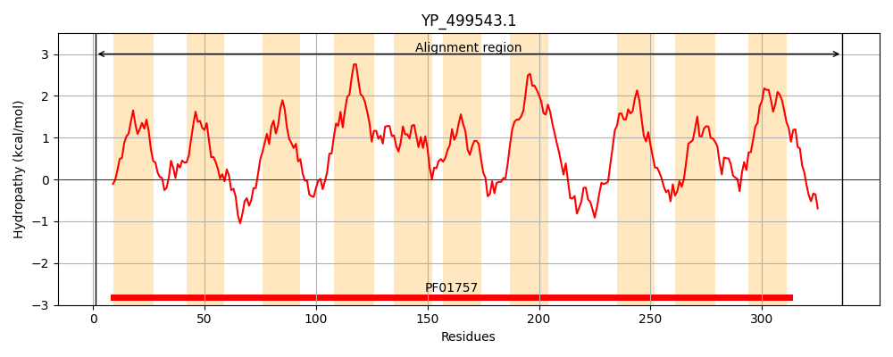
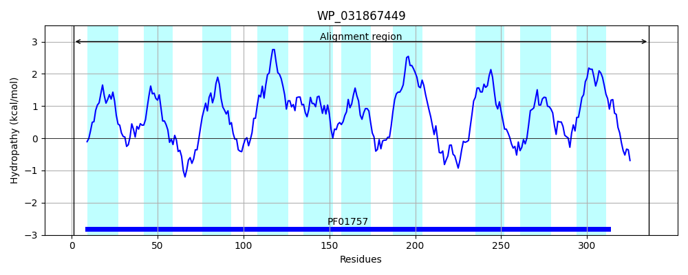
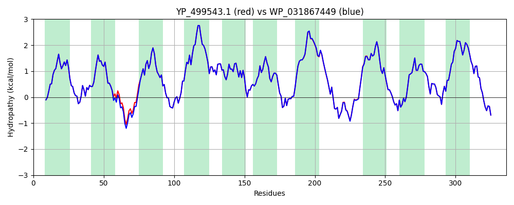

Hit Accession: WP_031867449
Hit TCID: 9.B.97.7.6
Hit Description: gnl|BL_ORD_ID|21013 gnl|TC-DB|WP_031867449.1|9.B.97.7.6 acyltransferase [Staphylococcus aureus]
Mach Len: 336
e:0.000000
Query TMS Count : 10
Hit TMS Count: 10
TMS-Overlap Score: 9.150000
Predicted Substrates:None
BLAST Alignment:
Score: 1726 , Bit scores: 669 bits, E-value: 0.0e+00, Alignment length: 336, Percentage identity: 99
Query: 1 MTSLKERDYFFDNARAILILLVVFGHMLQPYTSGDKYLSALYLVIYSFHMPTFLFISGYFAKNIDKPYYLEKISKRLIVPYMIFFAFFSIYYFLTGKSDELQLDPFNPVFALWFLITLFFFHVILVIVRRFNPYKVLSVSIIISIGAGFSDNIDSYLSISRTIVFFPIFYLGYIFTKKHTAIFKNKKLIPVSIITFILFFIVYVIHPINADWLLGSSPYTSLENEGQSIFSPFKRLILYGIILIAMTAFLNLMSTKKKLYTYIGSRTLYVYLLHGLIIGIVRGFEWYPFDNPISLMTYLYLISISVIIVYVLSTNFVCKWTNPIINLQRPSQFKDS 336
MTSLKERDYFFDNARAILILLVVFGHMLQPYTSGDKYLSALYLVIYSFHMPTFLFISGYFAKNIDK YYLEKISKRLIVPYMIFFAFFSIYYFLTGKSDELQLDPFNPVFALWFLITLFFFHVILVIVRRFNPYKVLSVSIIISIGAGFSDNIDSYLSISRTIVFFPIFYLGYIFTKKHTAIFKNKKLIPVSIITFILFFI+YVIHPINADWLLGSSPYTSLENEGQS+FSPFKRLILYGIILIAMTAFLNLMSTKKKLYTYIGSRTLYVYLLHGLIIGIVRGFEWYPFDNPISLMTYLYLISISVIIVYVLSTNFVCKWTNPIINLQRPSQFKDS
Sbjct: 1 MTSLKERDYFFDNARAILILLVVFGHMLQPYTSGDKYLSALYLVIYSFHMPTFLFISGYFAKNIDKRYYLEKISKRLIVPYMIFFAFFSIYYFLTGKSDELQLDPFNPVFALWFLITLFFFHVILVIVRRFNPYKVLSVSIIISIGAGFSDNIDSYLSISRTIVFFPIFYLGYIFTKKHTAIFKNKKLIPVSIITFILFFIIYVIHPINADWLLGSSPYTSLENEGQSVFSPFKRLILYGIILIAMTAFLNLMSTKKKLYTYIGSRTLYVYLLHGLIIGIVRGFEWYPFDNPISLMTYLYLISISVIIVYVLSTNFVCKWTNPIINLQRPSQFKDS 336 | Protein Hydropathy Plots: |
|---|
|  |  |
Pairwise Alignment-Hydropathy Plot:
|
|---|
|  |